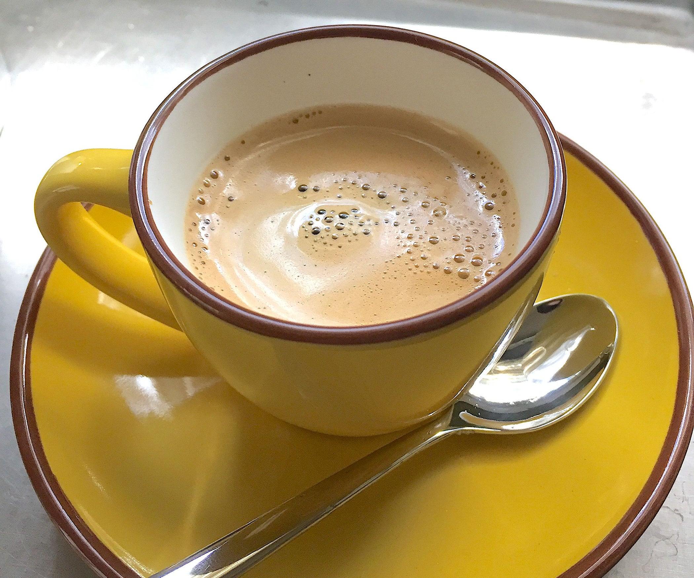
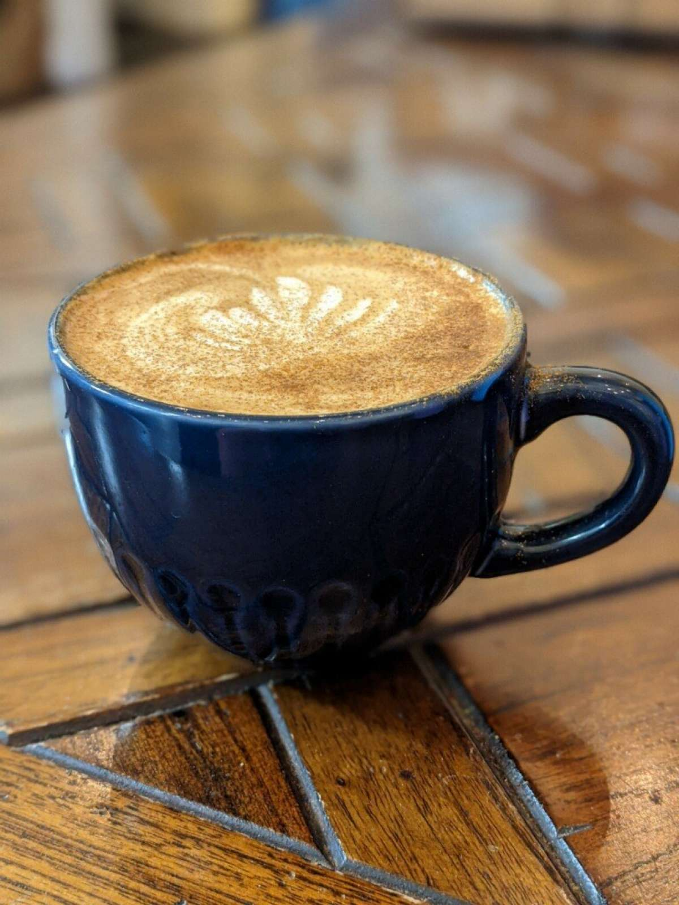

Latte
The latte is prepared in a 240 mL glass or cup with one standard shot of Espresso and filled with steamed milk, with a layer of foamed milk approximately 12 mm thick on the top.
Purchase for Rp. 15,000Cappuccino
An espresso-based coffee drink that originated in Austria with later development taking place in Italy, and is prepared with steamed milk foam.
Purchase for Rp. 15,000Espresso

Espresso coffee can be made with a wide variety of coffee beans and roast degrees. Espresso is the most common way of making coffee in souther Europe, especially in Italy, Spain, Portugal, Switzerland, Southern France, Bulgaria and Greece, and in Australia.
Purchase for Rp. 10,000